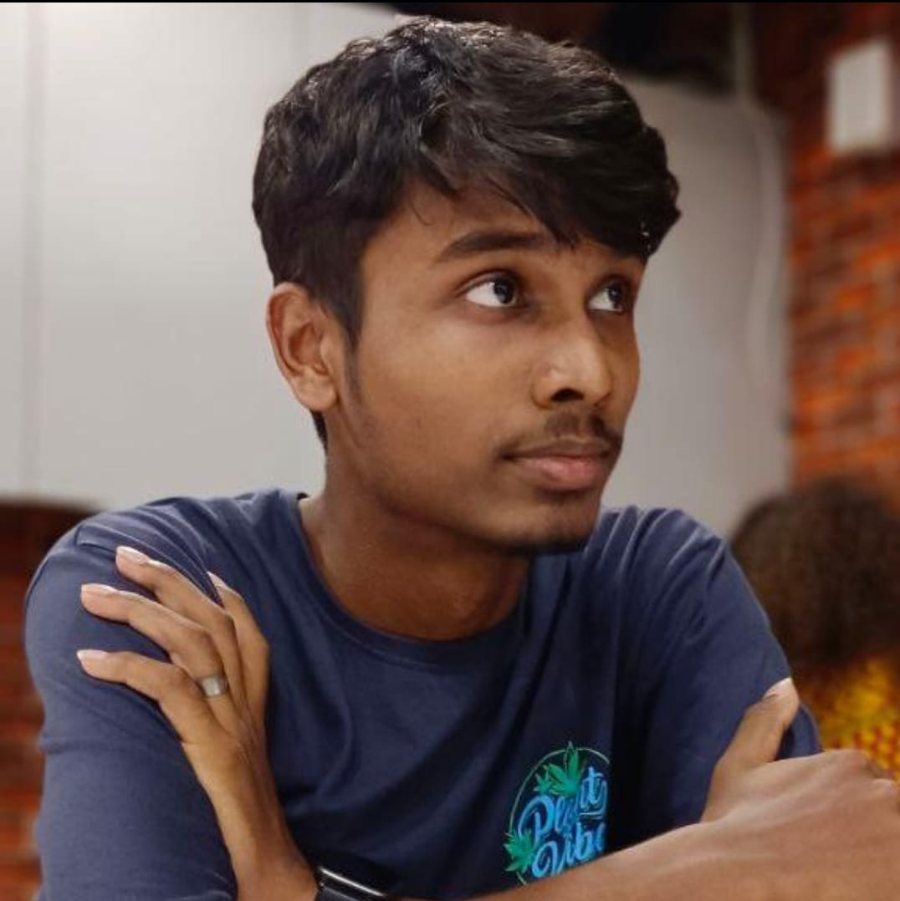

Jeffry Winson

Summary
I am a sincere and hardworking person, with experience in team management and coding.
Education
- 12th Pass with 94% - St. Patrick's Academy (2023)
- Currently pursuing Btech in CSE (specialisation in IOT) - VIT Vellore (2023-2027)
Previous Experiences
Member of Student Council - St. Patrick's Academy
Served in 2017, 2018, 2021 and 2022.
Positions that I have held:
- Student Reporter
- Discipline Prefect
- Head Boy
Junior Core Member of Various Clubs in my college
Some of the clubs I am a member of:
- Google Developer Students Club
- IEEE - Computer Society
- IOThinc
Skills
- Proficient in coding languages such as Java, C, C++, Python
- Team Management and Leadership Skills
- UI-UX Designing
- Upcoming Web-Developer
Awards and Certifications
- Meritorious Student of the Year - St. Patrick's Academy (2023)
Other